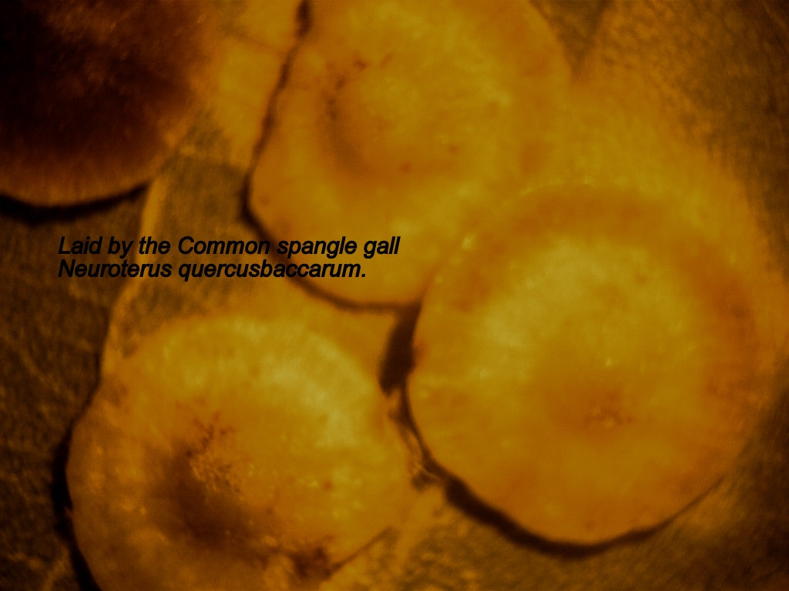
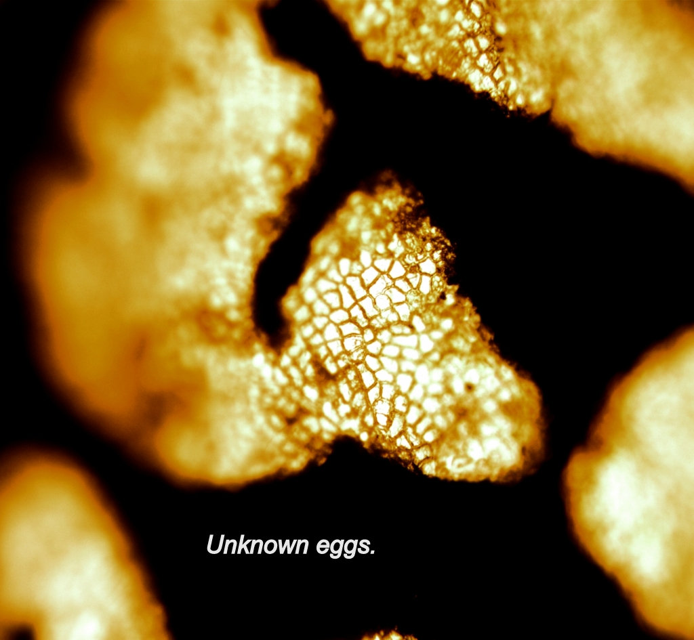

I heard a group of microscopists talking about Galls and for the life of me did not understand a word of what was said. So that being said I delved into the list of books and low and behold there was a book 'Provisional Keys to British Plant Galls'
So here we go on another episode, discovering about Plant Galls.
Most branches of biology and natural history can be classified under the fauna or the flora, vertebrate or invertebrate , flowering or non flowering, but plant galls defy such neat designation. By definition, a gall consists of plant tissue in which the cells have been stimulated to increase in size or in number, or in both, by an intrusive organism. The relationship is parasitic, although a few examples show evidence of symbiosis. A gall is not an organism in its own right but rather it is a manifestation of reactions between two very different living things. It must not be regarded as a species, and is named by reference to both host and parasite.
So hot foot in the hope of finding some galls I had a good scrounge round our wooded area.
I have added a few photos of eggs laid by galls with the named parasite responsible.


The next piece is from A Guide to the Insects of Britain and Northern Europe By
Michael Chinery.
Superfamily Cynipoidea
The members of this group are very small or minute insects with rather characteristic wing venation. The gaster (that part of the abdomen in Hymenoptera which lies behind the 'waist') is laterally compressed, more so in some species than in others, and the insects are generally dark in colour, althogh some are yellowish or reddish brown. Its members are of special interest because most of them induce gall formation on plants and many of them alternate between sexual and non- sexual generations. They are called gall wasps. Each species induces formation of its own characteristic gall on the plant. Most are found on oaks but a few species attack roses and certain herbaceous plants.
Read up on Neuroterus quercusbaccarum, and Diplolepis rosae.
Extract from book by Richard Headstrom titled Nature in Miniature.
Reproduced by kind permission from Mr. John Grafton, Senior Editor,
Dover Publications Inc (USA)
In his Natural History Pliny tells us about galls, but much earlier Theophrastus knew of their medicinal and curative properties. So galls were familiar to the ancients, though they did not know what caused them; no one did, in fact, until 1686, when Malpighi came up with the answer. And he was only partially right, for not only are galls caused by insects, as he said but also by fungi, nematode worms, mites, and probably in some instances, mechanical irritation.
Even today we have much to learn about the physiology of gall formation; nor do we know why any particular gall should have a distinctive shape. We know that the egg of the gall-making insect is laid on the host plant inserted in the tissues, and that when the larva emerges it makes its way to the meristematic tissues—that is, to the cells capable of dividing and multiplying-- because galls are formed only in such tissues. Once the larvae has reached these tissues it presumably secretes some substance that stimulates the cells to greater activity, causing them to multiply more than they would normally. The result is an abnormal growth, or gall.
Meanwhile, as the gall develops the insect feeds on the tissues that compose it, at the same time secreting an enzyme which changes the starch of cells to sugar in the same way that the plant enzyme normally converts starch to sugar. This sugar in turn is used by the plant to form new cells, that not only provide food for the insect but also promote the growth of the gall, since more cells are produced than the insect can possibly eat. So both the plant and insect profit from the association.
The study of galls and gall insects is a fascinating one, though in some respects it is complicated because we cannot always be sure the the insect which emerges from the gall is the one that made it: many insects do not make galls but lay their eggs in those made by others. Such insects are called 'guests' or inquilines. Furthermore, both the makers and the inquilines are attacked by parasitic hymenoptera, which only adds to our confusion, for it is not always easy to determine the interrelations of these insects . Many galls are complicated communities; for example the pinecone gall (Fig. 63A) is a veritable insect apartment house. This particular gall has been studied in considerable detail: in addition to its maker, as many as 31 different species, represented by 10 inquilines, 16 parasites, and 5 transients, have been found living in it.
There is no evidence that the form of a gall is of any adaptive importance; it may be that the formation of any specific shape is purely mechanical. But the remarkable thing about galls is that those made by the same species of insect always have the same form, always occur on the same species of plant, and always appear on the same part of the plant, so those versed in gall lore may know the identity of the gall maker by merely looking at the gall.
Galls occur on a wide variety of plants, but they are especially numerous on willows, oaks, roses, legumes, and the composites. They may be found on any part of the plant-- root, branch, stem, leaf, blossom, and even the seed. Some are rather inconspicuous, merely blisterlike swellings; others are hairy or pilelike; still others are suggestive of bullets; while those that occur on flowers or in flower clusters often make them look ravaged by fire. A few are grotesque and eye-catching.
Few galls attract our eye as quickly as the oak apples, which may be so numerous on an oak tree as to suggest a fair crop of fruit on an apple tree. They are globular in shape (Fig 63B ), green while in the process of being formed, tough and firm in texture and an inch or two in diameter. To all appearances they look like small unripe apples. At first glance they may seem to grow directly from the buds, but a closer examination shows that each one is a deformed leaf, hanging by the leaf stem or petiole. If one is cut open with a sharp knife or razor blade and viewed with the lens it is seen to contain a juicy, spongy white substance and a large central larval cell holding a small grub or young gall wasp. (Fig 63 C). The larval cell in an oak apple spotted with red (Fig 63 D) is supported by radiating fibers instead of a spongy substance. (Fig 63 E)
Some galls are very shallow such as the blister or spot galls found on asters and goldenrods. The spangle oak galls are thicker and look like shallow saucers. A few galls, such as the blueberry kidney gall (Fig 63 F). and the gouty oak gall, are quite woody. Galls often found on leaves of the witch hazel are conical, green, or green and reddish –tipped, and rather pretty (Fig63 G). Rose bushes invariably have a few spiny galls that are green or reddish and somewhat globular. The cockscomb gall is an irregular but comb-like greenish, red tipped elevation formed on the veins of an elm leaf and resembling the comb of a cock.
The oak fig gall, a cluster of many individual galls resembles a cluster of figs (Fig 63 H) and as seen with the lens, is covered with short fine hairs. Bullet galls (Fig 63 I) may appear singly or in clusters; they are yellow, sometimes tinged with red, and occur invariably on oaks. Sometimes maple leaves are thickly spotted with circular yellow, eyelike spots margined with cherry red (Fig 63 J). They are rather attractive.
Few galls, however, have the eye appeal of the woolsower (Fig 63 K). Many naturalists consider it one of the most beautiful objects in nature. Found on the twigs of various oaks, It is woolly, creamy white, and admirably set off with pinkish red blotches, the woolly growth containing seedlike grains. This is one object that must be looked at with the lens.
END